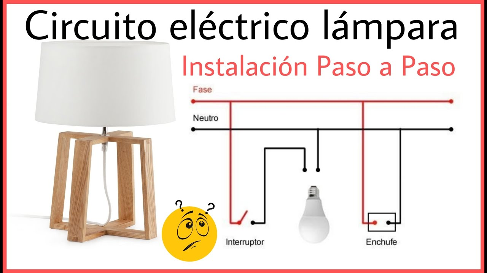

Tutorial: Instalación de una Lámpara de Techo
Materiales necesarios

- Lámpara de techo
- Bombillas
- Destornillador
- Escalera
- cinta Aislante
Consideraciones de seguridad
- Trabaja con los tacos o brekes abajo
- Utiliza equipo de protección personal si es necesario
- Verifica que todos los cables estén bien conectados antes de subir los tacos o brekes
Pasos para la instalación

- Apaga el interruptor y corta la energía
- Instala el soporte de montaje "plafon"
- Conecta los cables de la lámpara como indican las instrucciones
- Coloca la lámpara en el soporte de montaje
- Prueba la lámpara